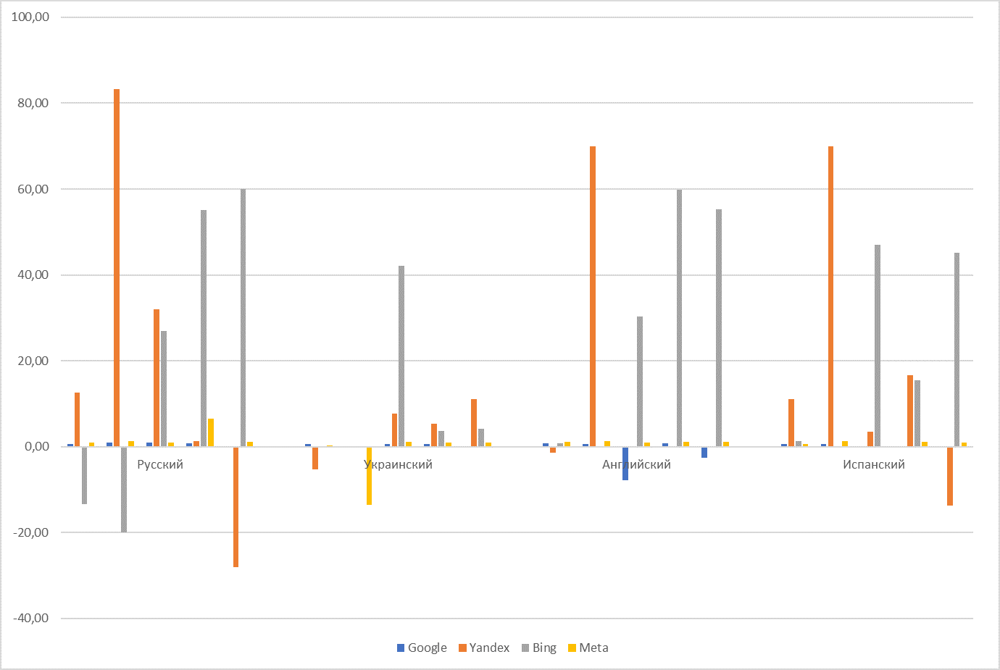

Представленный отчет позволяет оценить информационную ситуацию по теме магистерской работы. Он является основным документальным подтверждением глубины и полноты информационного поиска, а также служит для фиксации текущей ситуации в исследуемой области.
Поиск выполнен с использованием четырех поисковых систем (Google, Яндекс, Bing, Meta). Результаты сведены в таблицу. Всего произведено 20 запросов, имеющих отношение к магистерской работе. Из них четыре запроса соответствует названию магистерской работы на четырех языках, четыре запроса с ФИО руководителя, а также двенадцать запросов с ключевыми понятиями по теме магистерской работы.
Ниже приведены две таблицы с отчетами о поиске, которые разделяет временной промежуток в три месяца, а также ряд диаграмм, которые позволяют сравнить основные изменения, произошедшие за этот период.
Отчет о поиске на 14.09.2018 г.
Отчет о поиске на 16.12.2018 г.
Анализ результатов
При сравнении результатов запросов по различным поисковым системам можно прийти к выводу, что выявить однозначного лидера среди поисковых систем достаточно сложно. Одноко на фоне остальных выделяются Yandex и Google.
Можно заметить, что количество найденных страниц коррелирует с алфавитом посковой строки. Так для кириллических запросов намного лучше с задачей справляется Yandex. Однако, если оценивать поисковые строки на латинице, то навмного лучше справляется поисковая система Google. Поисковая система Bing является согласно данным явным аутсайдером, однако необходимо принять во внимание тот аспект, что релевантность найденных страниц оценена не была, поэтому однозначно говорить о недостатке системы не представляется возможным. В то же время поисковая система МЕТА
демонстрирует достаточно неплохие результаты, однако следует учитывать, что она построена на основе поиска Google.
Динамика количества результатов поисковой выдачи для каждого поискового запроса в каждой из поисковых систем во времени приведена на диаграмме ниже.

Рисунок 1 - Диаграмма динамики результатов поисковой выдаче во времени
Как можно увидеть из диаграммы, абсолютное большинство поисковых запросов со временем увеличило количество найденных страниц. Некоторые запросы сохранили практически идентичное количество найденных материалов, что особенно хорошо отразилось на украинских и испанских запросах.
Следует также заметить, что некоторая часть запросов уменьшила количество найденных сайтов и довольно радикально. Данный показатель говорит о том, что поисковые машины улучшают свой алгоритм поиска, отсеивают неуникальные статьи или производят ревизию индексных файлов.
Согласно диаграмме можно выделить две наиболее быстро развивающихся системы в плане количества найденных страниц. Это Yandex и Bing. Именно эти системы дали наибольшие приросты во времени, а именно на 83% и 60% соответственно. Набольшее уменьшение количества также показали эти системы, а именно на 28% и 20% соответственно. Эти данные демонстрируют то, что эти системы активно работают со своими индексными файлами и релевантностью поиска.
Согласно языковому принципу бесспорными лидерами являются русский и английский языки, как языки международного научного общения, однако достаточно быстро на данный момент развивается и испаноязычный сегмент. Украинский в данном наборе не предоставляет таких результатов, однако следует отметить, что он по типу японского и шведского является монокультурным языком, поэтому его сравнение с языками международного общения не может представить достоверную картину развития данного языкового сегмента.